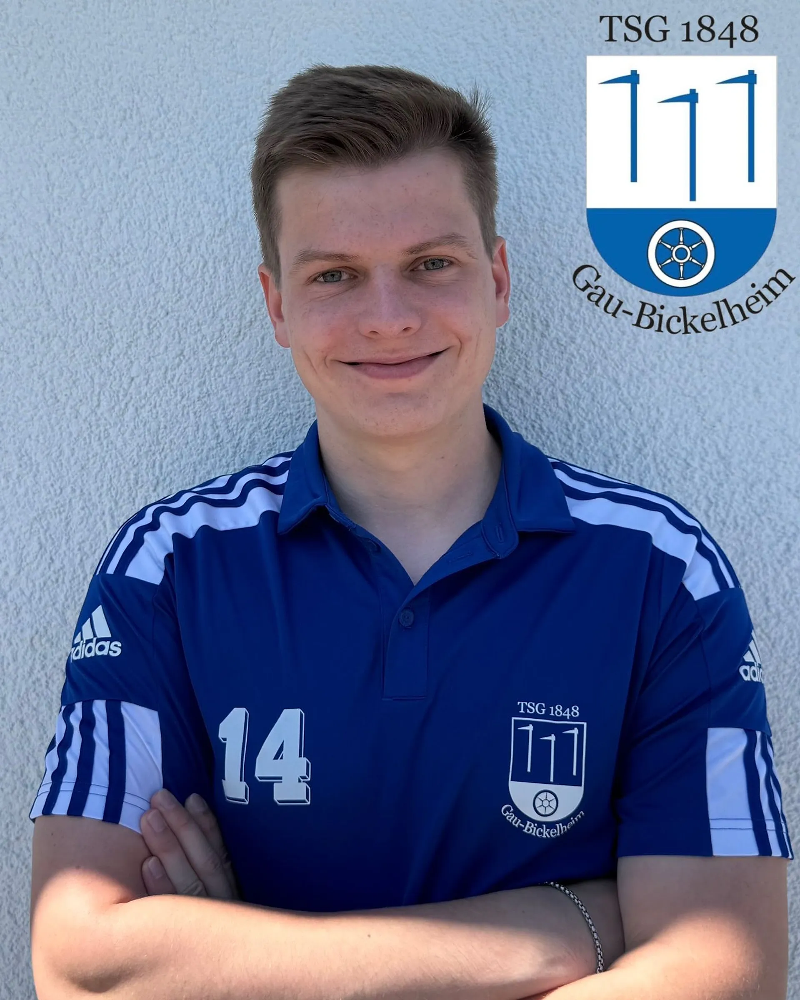

Hi, ich bin Till!
Willkommen auf meiner persönlichen Seite! Ich studiere Geoinformatik im 5. Semester und spiele leidenschaftlich gerne Fußball.
Mehr über mich und meine Projekte findest du auf meinem GitHub-Profil.
Aktuell bin ich an der Hochschule Mainz und arbeite an spannenden Projekten rund um Geoinformatik und WebGIS.
